Real Connection
Peru isn't something you observe; it's something you feel — culture shared from the inside, through genuine relationships, not staged for visitors.
Explore Cultural Experiences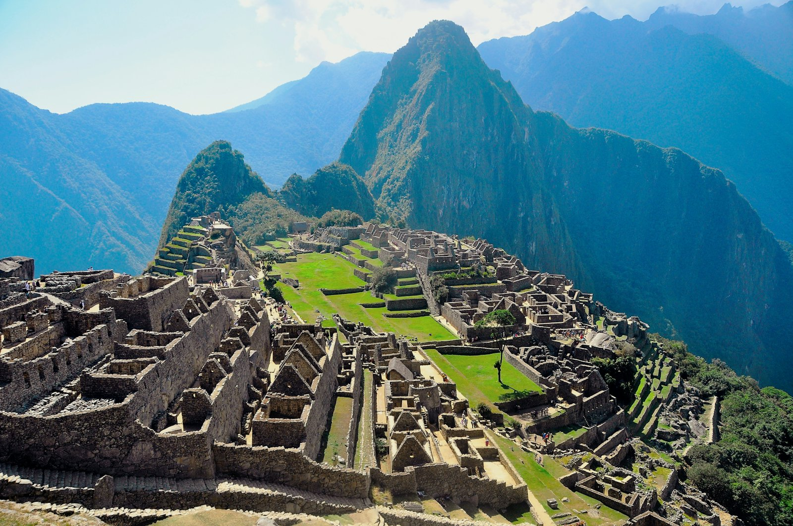
Bespoke Cultural & Gastronomic Journeys
Where Peru's flavours, stories, landscapes and people come together in one beautifully crafted journey — designed personally for you.
The markets, the mountains, the warmth, the food and the stories. I design journeys that bring all of that together: premium, personal and deeply Peruvian.
Every itinerary is crafted by me, Patricia — a Peruvian who has called the UK home for nearly 25 years — blending insider knowledge, trusted local partners and meaningful cultural and gastronomic experiences.
A glimpse of where your crafted journey could take you — each one real, and each one yours to reshape.


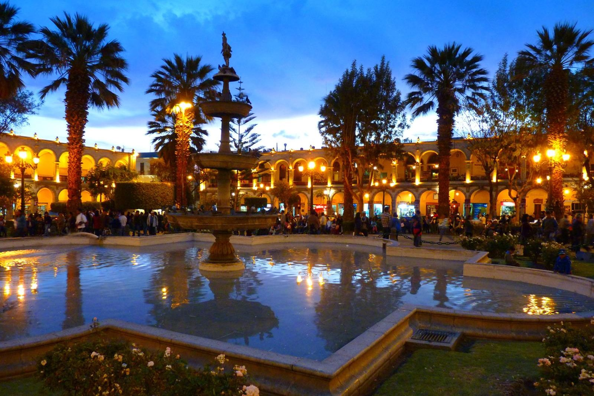
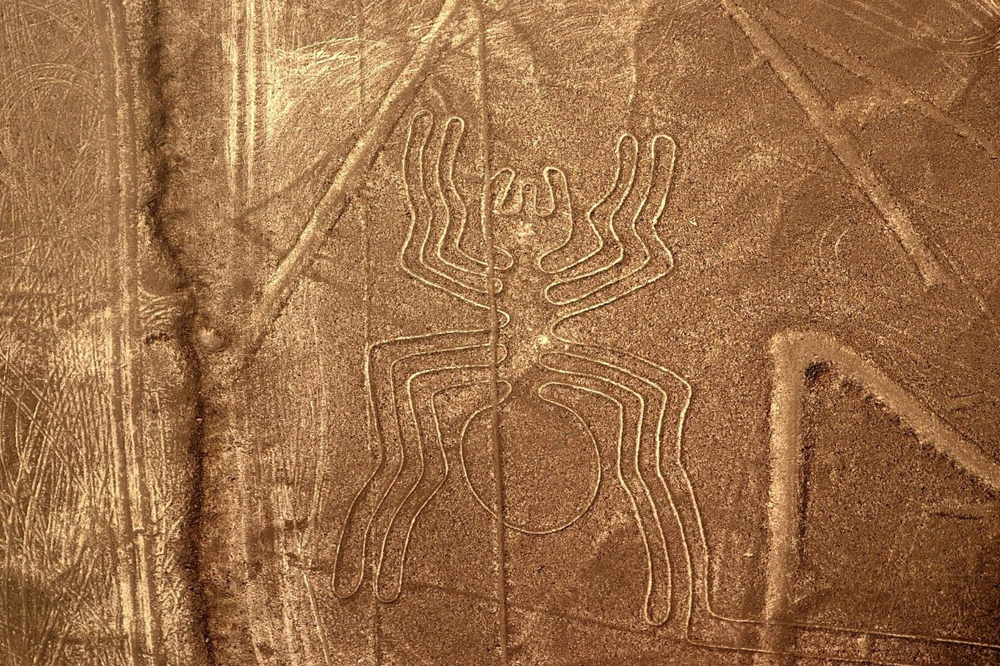


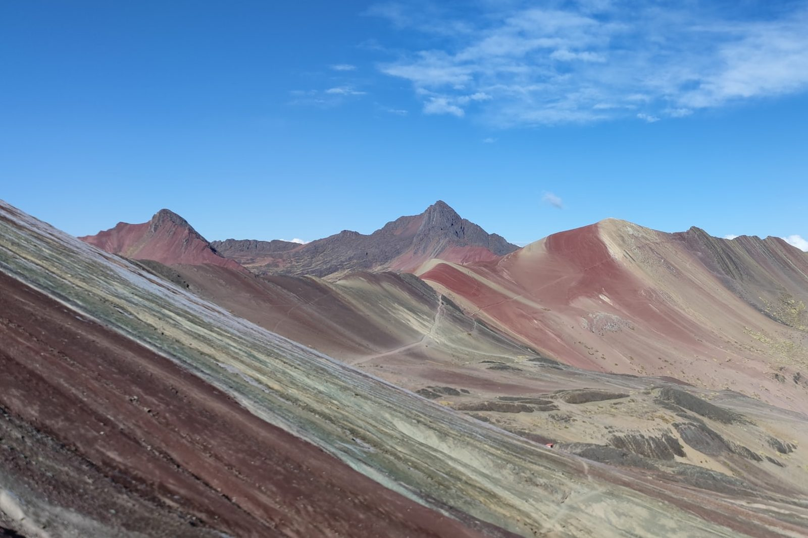

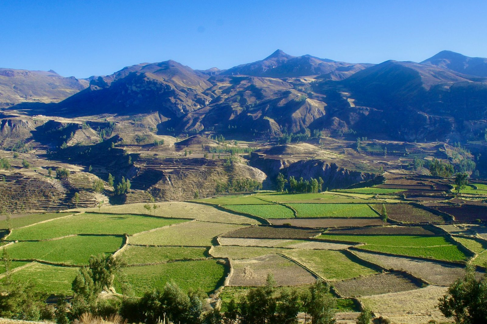
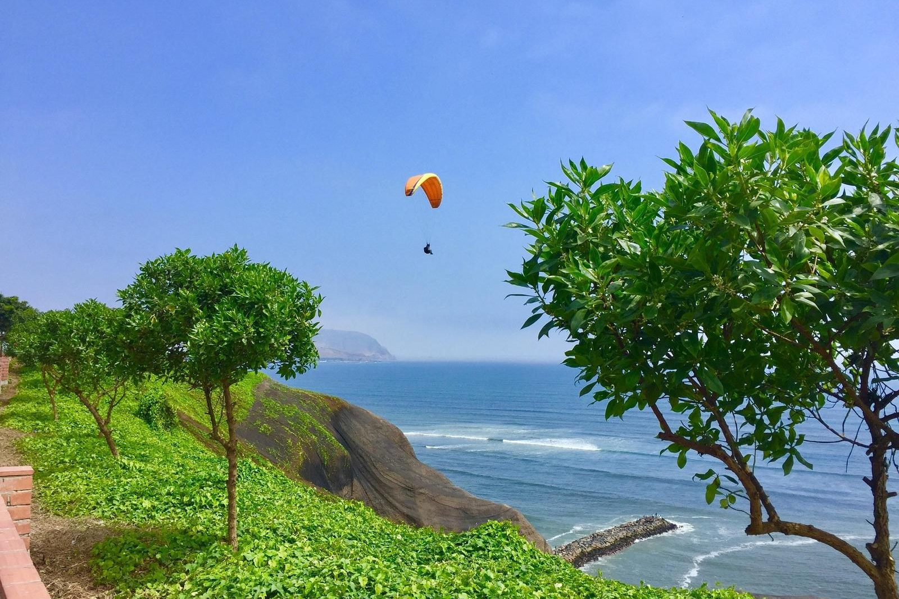
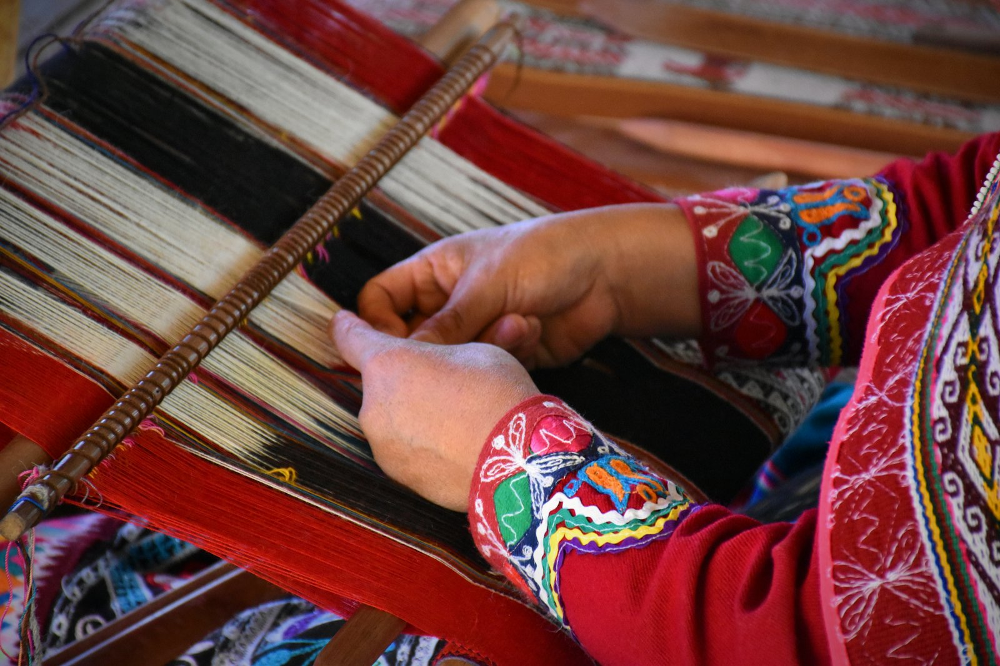
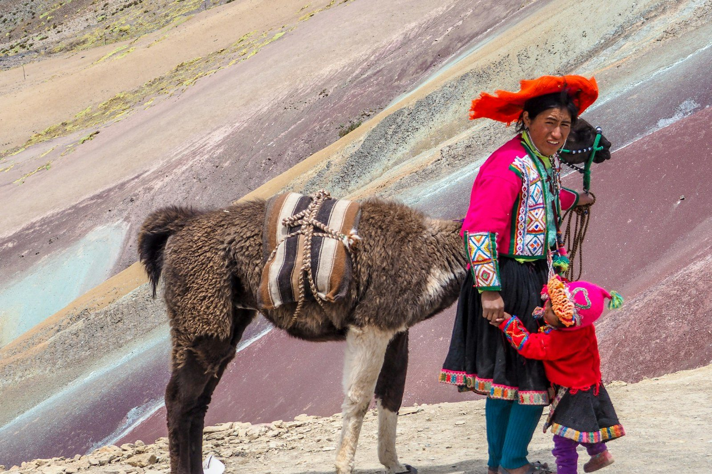


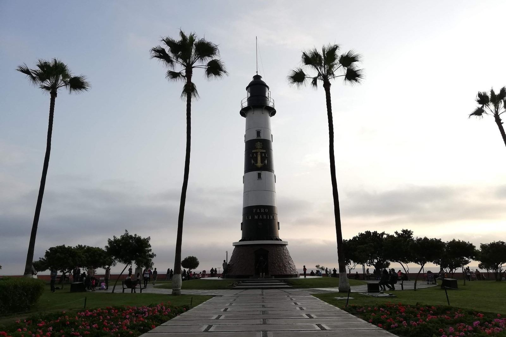
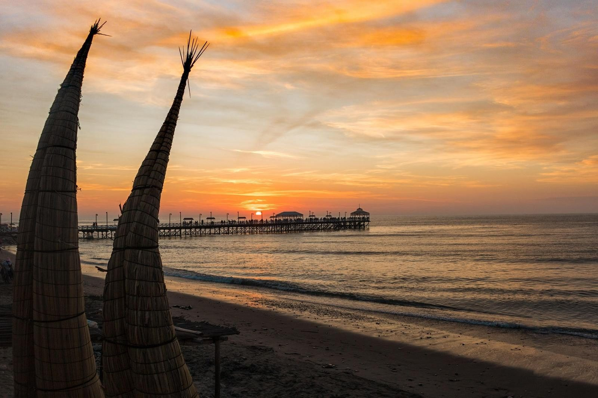
Culture, gastronomy and crafted travel — the threads we weave together into a single, seamless journey shaped around you.
Peru isn't something you observe; it's something you feel — culture shared from the inside, through genuine relationships, not staged for visitors.
Explore Cultural Experiences
Bold flavour, history and identity — gastronomic tours through Peru's best tables and the markets locals love, shaped around what you enjoy.
Explore Gastronomic Experiences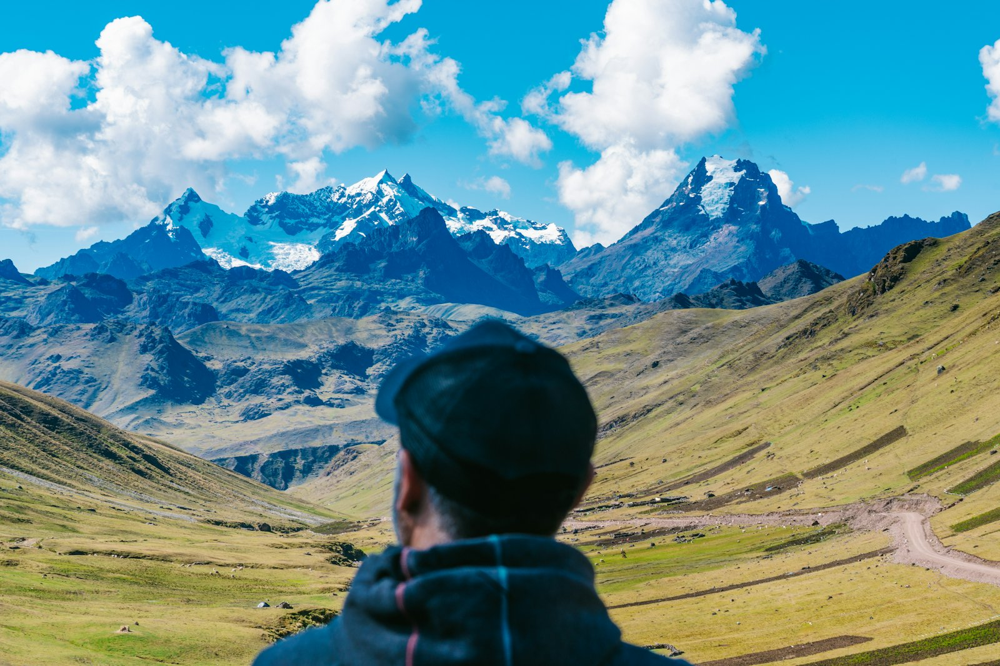
We don't sell packages, we craft journeys — built from scratch around your pace and style. Personalised travel with a Peruvian heartbeat.
Discover Our ApproachFrom the Pacific coast to the high Andes and the depths of the Amazon — we weave the regions that move you into one seamless journey.
Where Peru's culinary story begins — markets, ceviche and world-renowned tables.
Inca heartland — Machu Picchu, artisan villages and terraced valleys.

Floating islands, living textiles and the high, luminous plateau.
Rivers, wildlife and the deep, ancient energy of the rainforest.
Each of these is a beginning — a considered framework we reshape, in full, around you.

Lima · Paracas · Ica · Arequipa · Colca Canyon · Lake Titicaca · Cusco · Sacred Valley · Machu Picchu · Tambopata
The fullest expression of Peru, coast to cloud forest — the Pacific and the pisco valleys, the white city and the condors, Titicaca, Machu Picchu and the Amazon.
Lima · Paracas · Ica · Nazca · Arequipa · Colca Canyon · Puno · Cusco · Machu Picchu
The great sweep of Peru — colonial Lima, the coast and the Nazca lines, Arequipa and Colca, Lake Titicaca, and the old sun route into Cusco and Machu Picchu.
Lima · Arequipa · Colca Canyon · Cusco · Machu Picchu
The essential highlands in ten considered days, closing with a mountain of your choosing — Vinicunca's painted slopes or the still waters of Humantay.
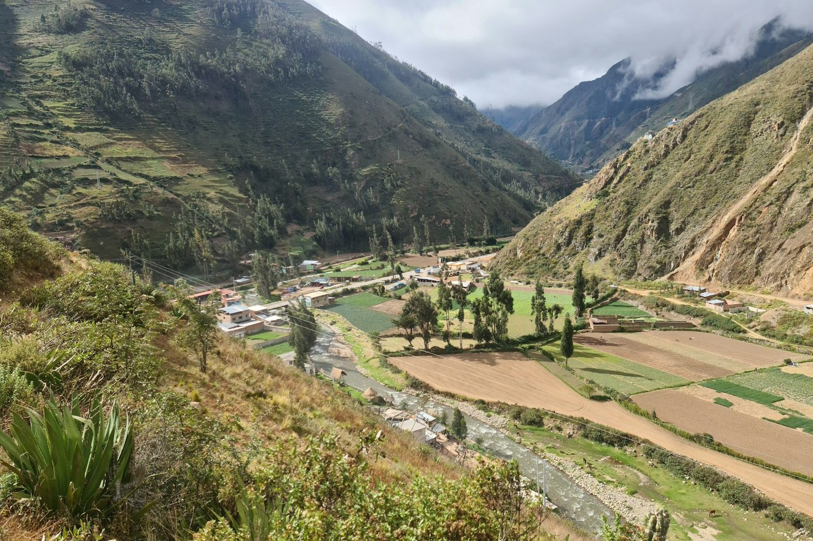
Cusco · Sacred Valley · Machu Picchu
Three days at the heart of the Inca world — Cusco's temples, the Sacred Valley by way of Maras and Moray, and Machu Picchu itself. Crafted, never rushed.
Every journey is tailored to your dates, style and budget — from boutique to fully private luxury. Pricing is confirmed individually for your itinerary.
A boutique studio, not a call centre. Every element considered, every partner personally known, every day shaped around you.

Peru specialists, not generalist travel planners — a single country, known intimately.
Long-standing relationships with the cooks, guides and families who open doors others cannot.
From street-food adventures to premium hotels and private guides — shaped to your budget and style.
Real connection with people, flavours and traditions — never staged performance.
From Lima's finest tables to Andean home kitchens and bustling market stalls.
Designed from a blank page around your interests, your palate and your pace.
“The perfect balance of culture, food and comfort — every day felt special.”
“We experienced Peru in a way we could never have discovered on our own.”
“The thoughtful details made all the difference. Truly unforgettable.”
Tell me your rough dates and party size, and I'll craft a bespoke Peru itinerary designed entirely around you.
Prefer to talk now? Message Patricia on WhatsApp